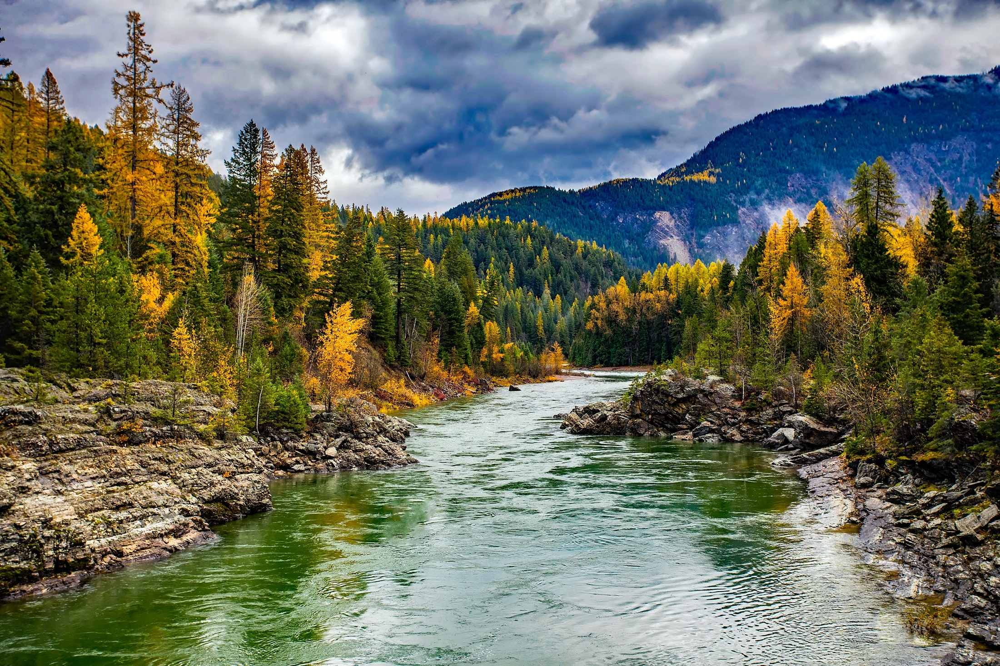
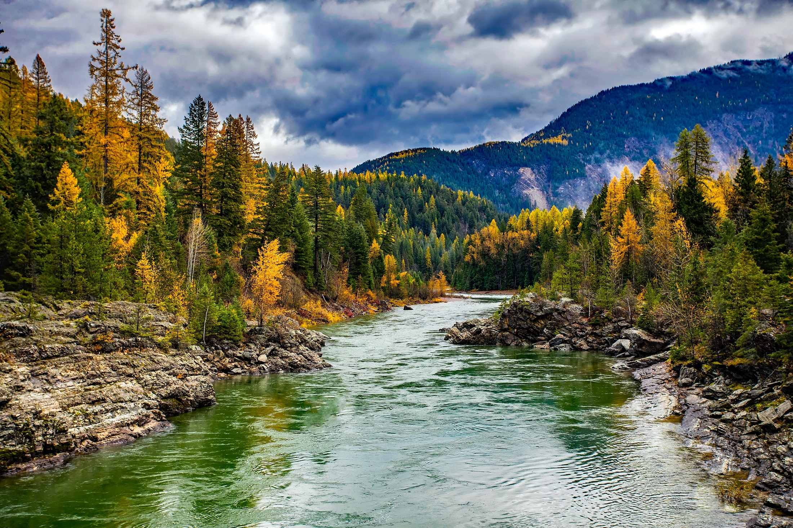

UPCOMING EVENTS

Everest Camp Trek
Located on the foot of the highest mountain, the Everest (8848m), Everest Base Camp Trek is one of the most visually as well as spiritually satisfying treks in Nepal.

Walking Holidays
The Gokyo Valley Trek is one of the offbeat routes in the Khumbu Region (Sagarmatha National Park) and which finds fewer visitors, so you can enjoy the surroundings with no crowd.
 
